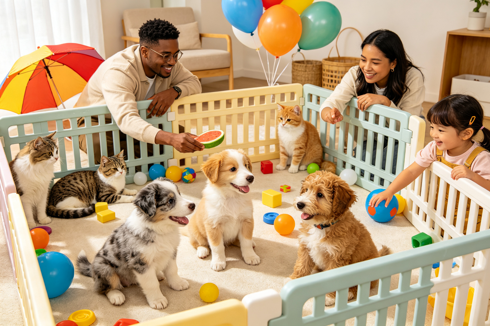
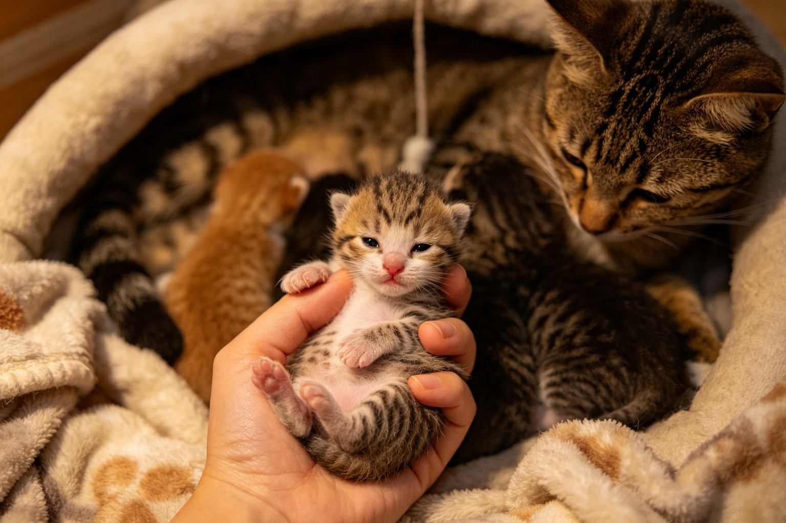
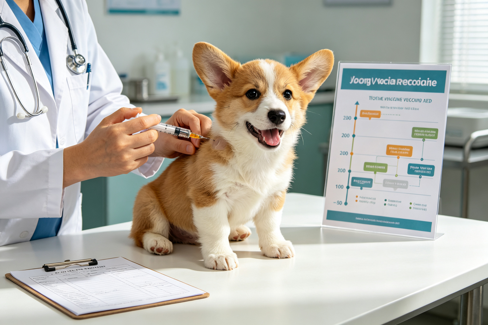
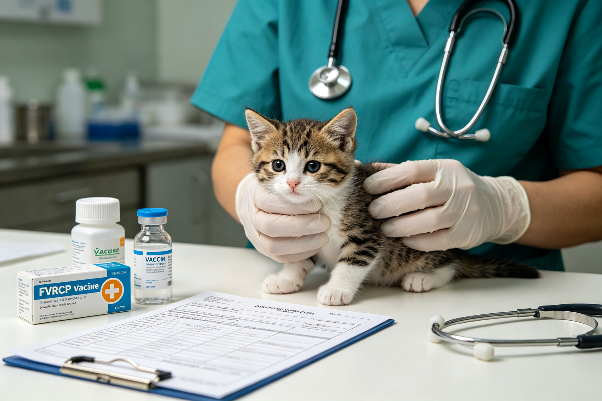
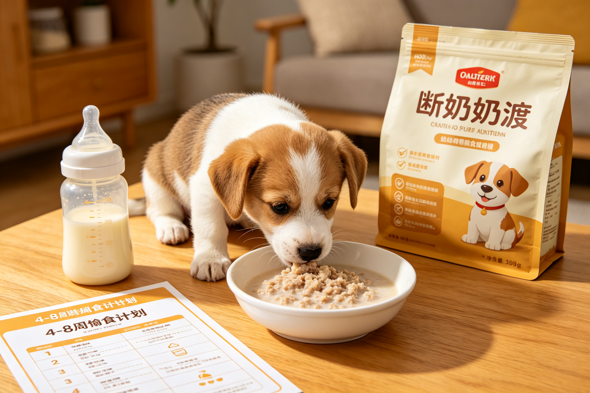
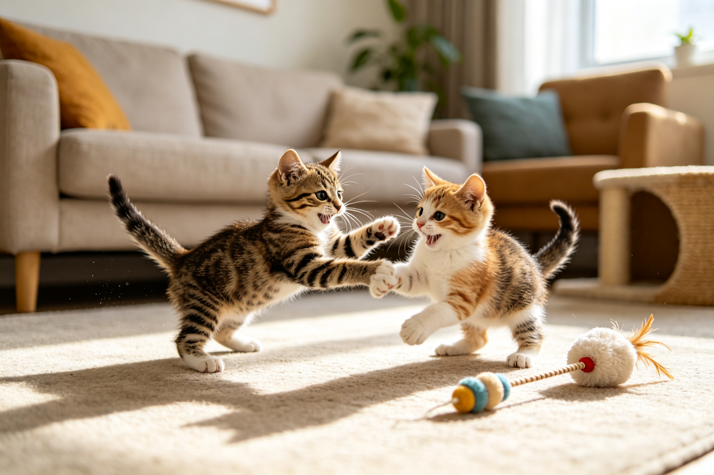
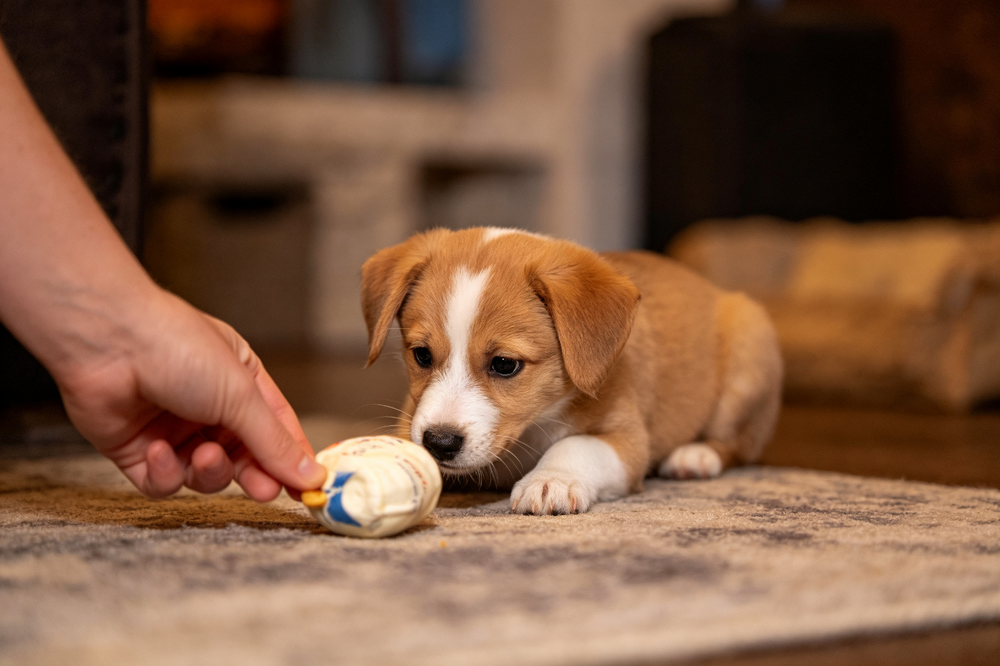
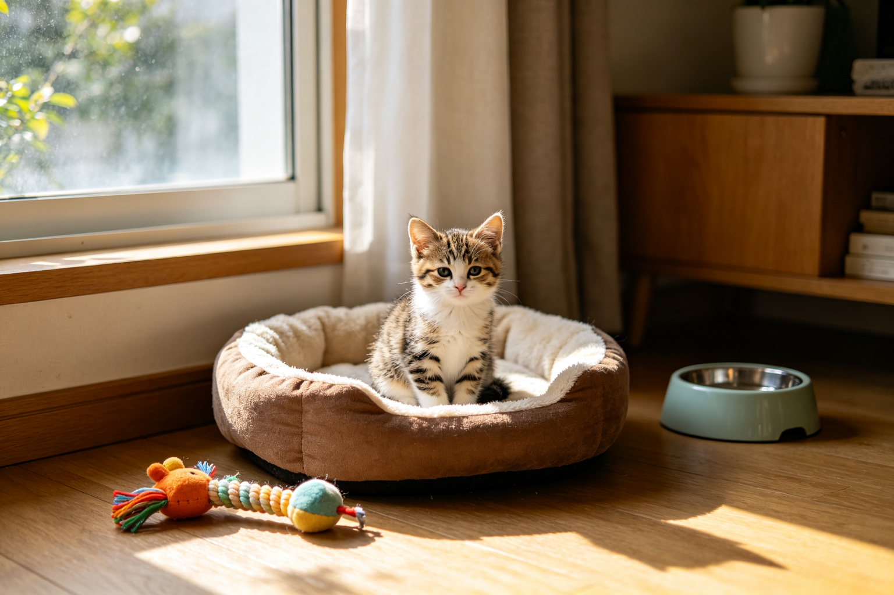
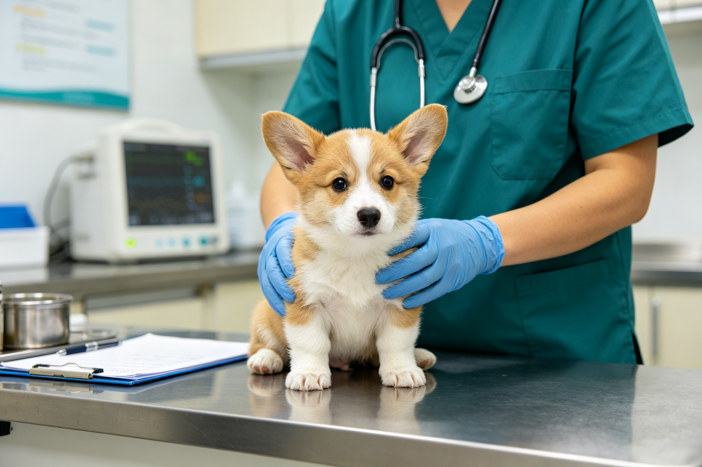

幼犬社會化關鍵期：3-14週發展指南
幼犬3-14週是社會化的黃金窗口——這個時期的經驗決定了狗狗一輩子的性格與適應力。從各種人、動物、環境、聲音、觸感到物品，完整的100種社會化事物清單與執行方法...

幼貓社會化與行為發育：2-7週定型期
幼貓2-7週的社會化決定了牠對人類、其他動物與環境的終身態度。這個時期沒有足夠人類接觸的幼貓，長大後可能怕人或具有攻擊性。從幼貓發育階段、社會化方法、同窩互動的...

幼犬疫苗接種時間軸：核心疫苗與抗體
幼犬疫苗不是打一次就好——需要按照時間軸接種多劑才能建立有效免疫。從核心疫苗（狂犬病、犬瘟、小病毒、傳染性肝炎）、非核心疫苗（鉤端螺旋體、犬咳、萊姆病）、接種時...

幼貓疫苗與驅蟲：FVRCP與狂犬病
幼貓的疫苗與驅蟲需要按照年齡階段進行——錯過時機可能讓幼貓暴露在致命疾病風險中。從FVRCP三價疫苗、狂犬病疫苗、接種時間軸、體內外驅蟲（絛蟲、蛔蟲、跳蚤、壁蝨...

幼犬斷奶與固體食物過渡：4-8週餵食
幼犬4週大開始斷奶，從母乳過渡到固體食物是一個關鍵階段——營養不足或過渡不當可能影響終身健康。從斷奶時機、奶糕選擇、泡軟方法、餵食頻率、營養需求到常見消化問題處...

幼貓遊戲行為發展：狩獵練習與咬合力
幼貓的遊戲不是單純的玩——而是狩獵技能的練習、社會化的學習與咬合力控制的訓練。從幼貓遊戲的發展階段、同窩互動的重要性、咬合力控制的學習機制、人手當玩具的糾正方法...

幼犬恐懼期8-11週：如何避免創傷
幼犬8-11週會經歷第一個恐懼期——這個時期的負面經驗可能造成終身的恐懼與焦慮。從恐懼期的行為表現、常見的創傷來源、如何安全地進行社會化、正向體驗的創造方法到主...

幼貓分離焦慮預防：建立獨處能力
幼貓時期沒有學會獨處的貓咪，長大後容易出現分離焦慮——過度嚎叫、破壞行為、隨地大小便。從幼貓分離焦慮的成因、5個從小建立獨處能力的方法、漸進式獨處訓練步驟到常見...

幼犬幼貓發育異常辨識：健康警訊
幼犬幼貓的某些「可愛」行為可能隱藏著發育異常或健康問題——走路搖晃不一定是萌，可能是神經問題；肚子圓滾滾不一定是胖，可能是寄生蟲。從常見的發育異常類型、容易被誤...